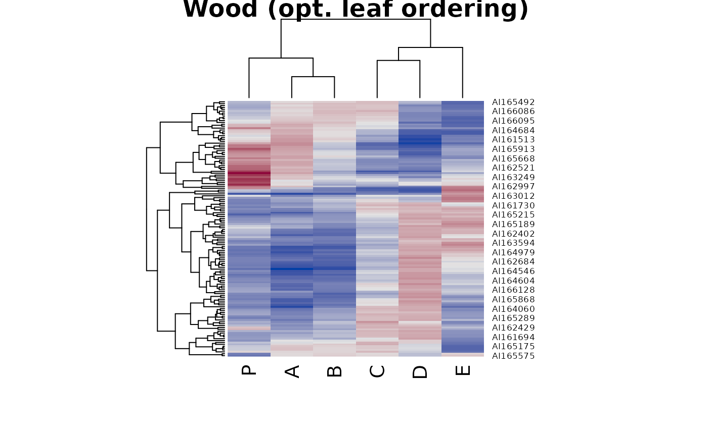
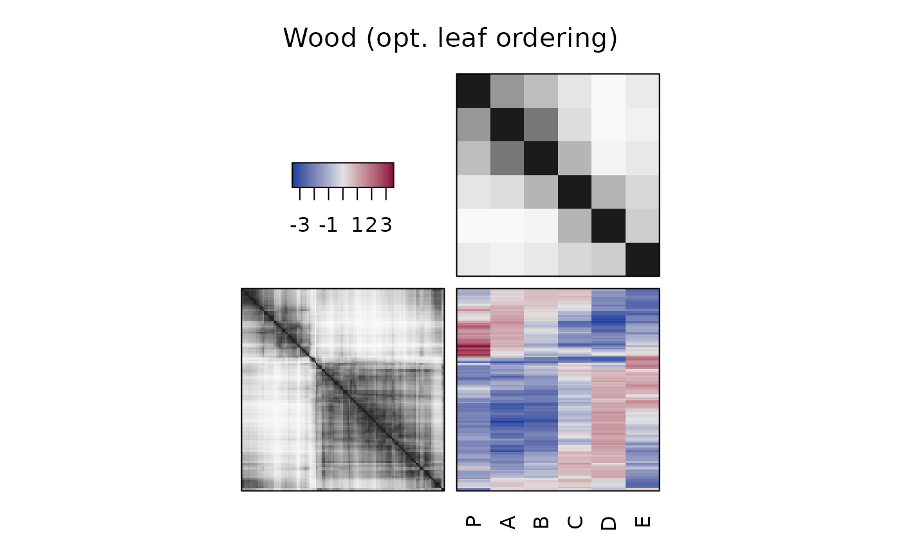
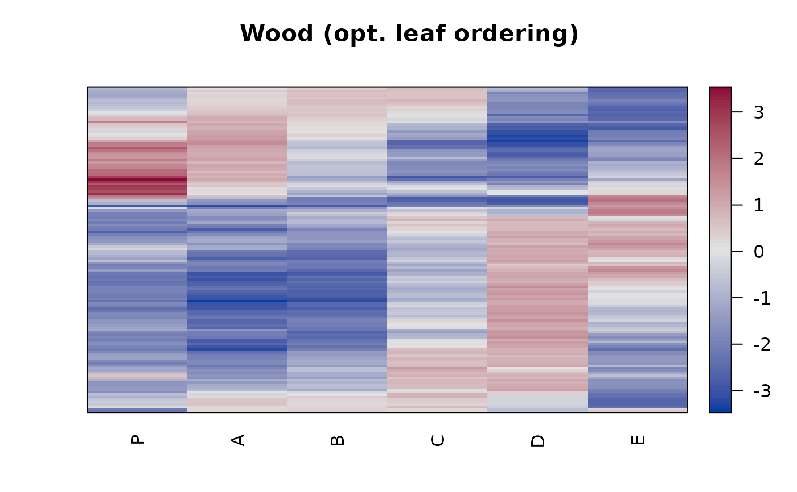
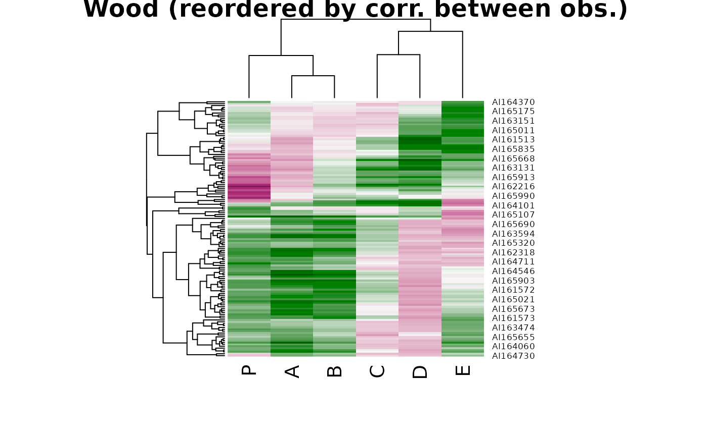
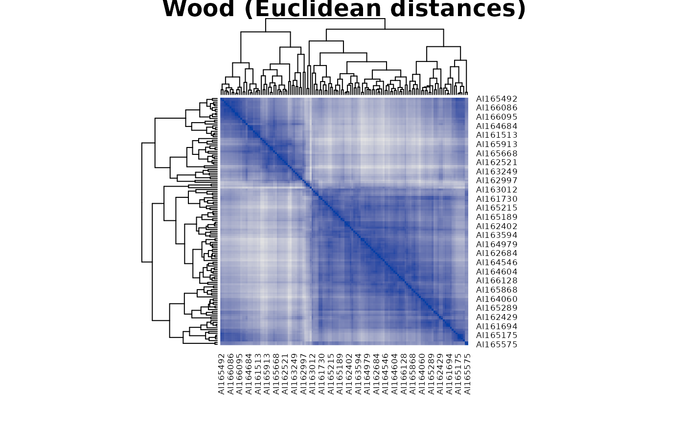
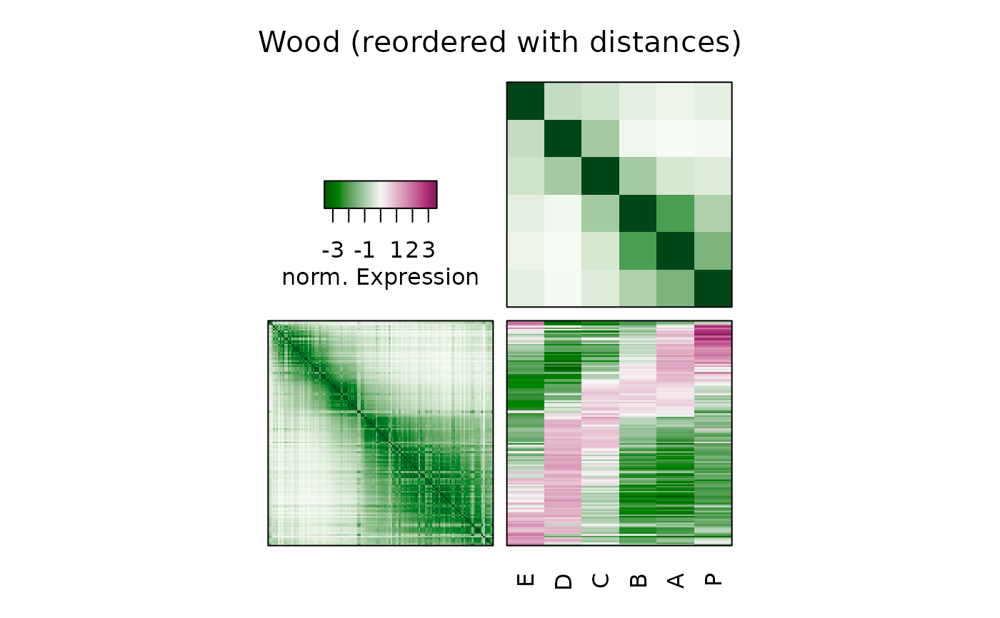
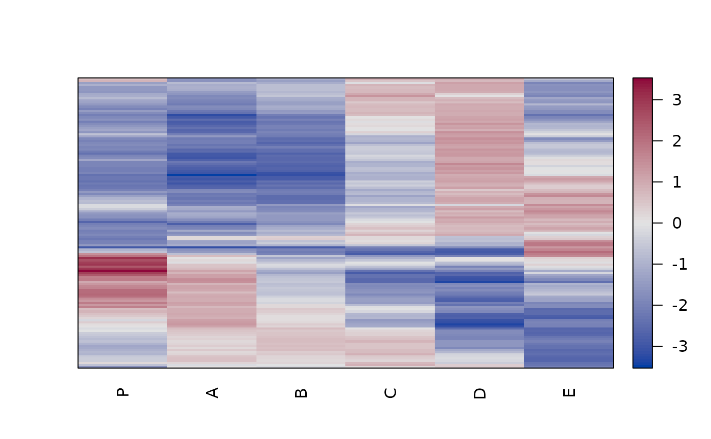
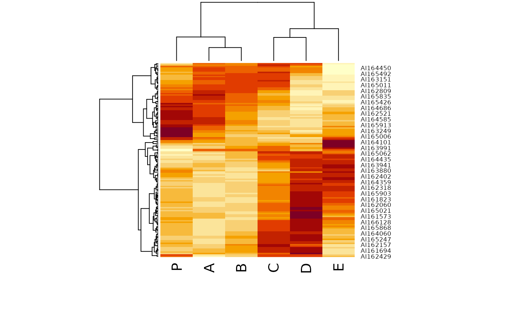
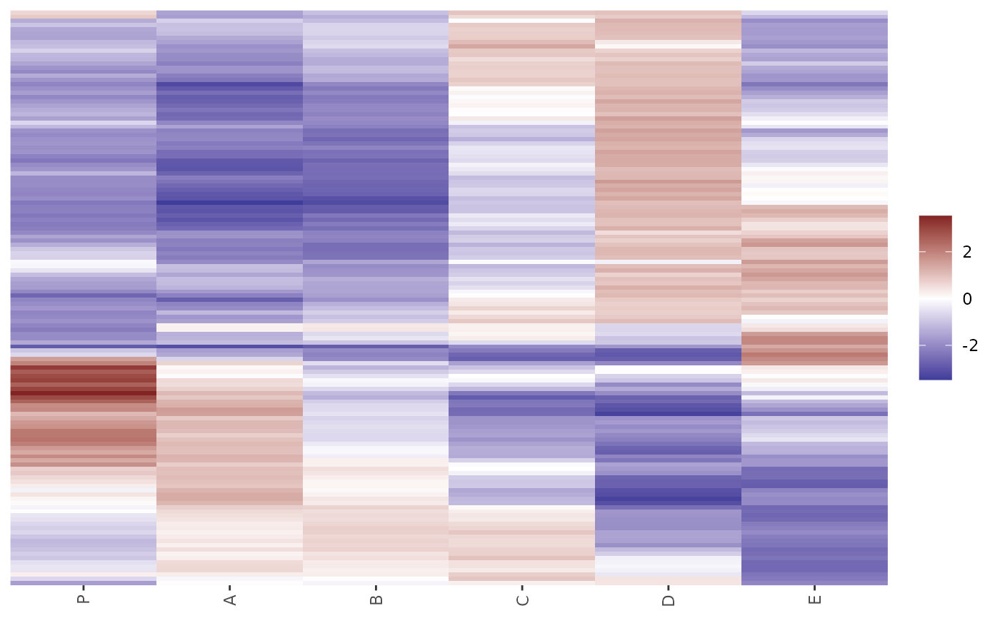

Provides heatmaps reordered using several different seriation methods. This includes dendrogram based reordering with optimal leaf order and matrix seriation-based heat maps.
Usage
hmap(
x,
distfun = stats::dist,
method = "OLO_complete",
control = NULL,
scale = c("none", "row", "column"),
plot_margins = "auto",
col = NULL,
col_dist = grays(power = 2),
row_labels = NULL,
col_labels = NULL,
...
)
gghmap(
x,
distfun = stats::dist,
method = "OLO_complete",
control = NULL,
scale = c("none", "row", "column"),
prop = FALSE,
...
)Arguments
- x
a matrix or a dissimilarity matrix of class dist. If a dissimilarity matrix is used, then the
distfunis ignored.- distfun
function used to compute the distance (dissimilarity) between both rows and columns. For
gghmap(), this parameter is passed on incontrol.- method
a character strings indicating the used seriation algorithm (see
seriate.dist()). If the method results in a dendrogram thenstats::heatmap()is used to show the dendrograms, otherwise reordered distance matrices are shown instead.- control
a list of control options passed on to the seriation algorithm specified in
method.- scale
character indicating if the values should be centered and scaled in either the row direction or the column direction, or none. Default is none.
- plot_margins
character indicating what to show in the margins. Options are:
"auto","dendrogram","distances", or"none".- col
a list of colors used.
- col_dist
colors used for displaying distances.
- row_labels, col_labels
a logical indicating if row and column labels in
xshould be displayed. IfNULLthen labels are displayed if thexcontains the appropriate dimname and the number of labels is 25 or less. A character vector of the appropriate length with labels can also be supplied.- ...
further arguments passed on to
stats::heatmap().- prop
logical; change the aspect ratio so cells in the image have a equal width and height.
Value
An invisible list with elements:
- rowInd, colInd
index permutation vectors.
- reorder_method
name of the method used to reorder the matrix.
The list may contain additional elements (dendrograms, colors, etc).
Details
For dendrogram based heat maps, the arguments are passed on to
stats::heatmap() in stats. The following arguments for heatmap()
cannot be used: margins, Rowv, Colv, hclustfun, reorderfun.
For seriation-based heat maps further arguments include:
gpan object of classgparcontaining graphical parameters (seegpar()in package grid).newpagea logical indicating whether to start plot on a new pagepropa logical indicating whether the height and width ofxshould be plotted proportional to its dimensions.showdistDisplay seriated dissimilarity matrices? Values are"none","both","rows"or"columns".keylogical; show a colorkey?key.labLabel plotted next to the color key.marginsbottom and right-hand-side margins are calculated automatically or can be specifies as a vector of two numbers (in lines).zlimrange of values displayed.col,col_distcolor palettes used.
See also
Other plots:
VAT(),
bertinplot(),
dissplot(),
palette,
pimage()
Examples
data("Wood")
# Default heatmap does Euclidean distance, hierarchical clustering with
# complete-link and optimal leaf ordering. Note that the rows are
# ordered top-down in the seriation order (stats::heatmap orders in reverse)
hmap(Wood, main = "Wood (opt. leaf ordering)")

hmap(Wood, plot_margins = "distances", main = "Wood (opt. leaf ordering)")

hmap(Wood, plot_margins = "none", main = "Wood (opt. leaf ordering)")

# Heatmap with correlation-based distance, green-red color (greenred is
# predefined) and optimal leaf ordering and no row label
dist_cor <- function(x) as.dist(sqrt(1 - cor(t(x))))
hmap(Wood, distfun = dist_cor, col = greenred(100),
main = "Wood (reordered by corr. between obs.)")

# Heatmap for distances
d <- dist(Wood)
hmap(d, main = "Wood (Euclidean distances)")

# order-based with dissimilarity matrices
hmap(Wood, method = "MDS_angle",
col = greenred(100), col_dist = greens(100, power = 2),
keylab = "norm. Expression", main = "Wood (reordered with distances)")

# Manually create a simple heatmap with pimage.
o <- seriate(Wood, method = "heatmap",
control = list(dist_fun = dist, seriation_method = "OLO_ward"))
o
#> object of class ‘ser_permutation’, ‘list’
#> contains permutation vectors for 2-mode data
#>
#> vector length seriation method
#> 1 136 Heatmap
#> 2 6 Heatmap
pimage(Wood, o)

# Note: method heatmap calculates reordered hclust objects which can be used
# for many heatmap implementations like the standard implementation in
# package stats.
heatmap(Wood, Rowv = as.dendrogram(o[[1]]), Colv = as.dendrogram(o[[2]]))

# ggplot 2 version does not support dendrograms in the margin (for now)
if (require("ggplot2")) {
library("ggplot2")
gghmap(Wood) + labs(title = "Wood", subtitle = "Optimal leaf ordering")
gghmap(Wood, flip_axes = TRUE, prop = TRUE) +
labs(title = "Wood", subtitle = "Optimal leaf ordering")
dist_cor <- function(x) as.dist(sqrt(1 - cor(t(x))))
gghmap(Wood, distfun = dist_cor) +
labs(title = "Wood", subtitle = "Reordered by correlation between observations") +
scale_fill_gradient2(low = "darkgreen", high = "red")
gghmap(d, prop = TRUE) +
labs(title = "Wood", subtitle = "Euclidean distances, reordered")
# Note: the ggplot2-based version currently cannot show distance matrices
# in the same plot.
# Manually seriate and plot as pimage.
o <- seriate(Wood, method = "heatmap", control = list(dist_fun = dist,
seriation_method = "OLO_ward"))
o
ggpimage(Wood, o)
}
#> Scale for fill is already present.
#> Adding another scale for fill, which will replace the existing scale.
